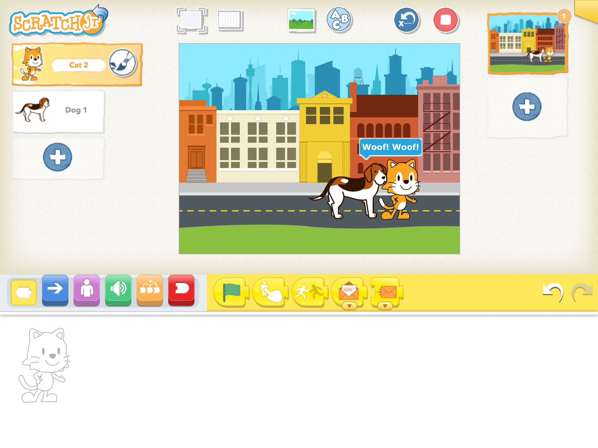

Try Coding with ScratchJr
Try these teacher-led activities to explore creative coding with ScratchJr.
Can I Make the Sun Set?
Students will get an introduction to programming by making a sun set over a city landscape! Ages 5-9. Programming, Storytelling, Mathematics, Creativity See more
Can I Make a Spooky Forest?

Students will learn more features of ScratchJr by creating a spooky forest with multiple characters! Ages 5-9. Art, Storytelling, Sequence See more
Can I Make My Characters Greet Each Other?

Students will learn advanced features of the ScratchJr app when they make a dog and kitten meet each other and exchange hellos! Ages 5-9. Programming, Storytelling, Mathematics, Creativity See more